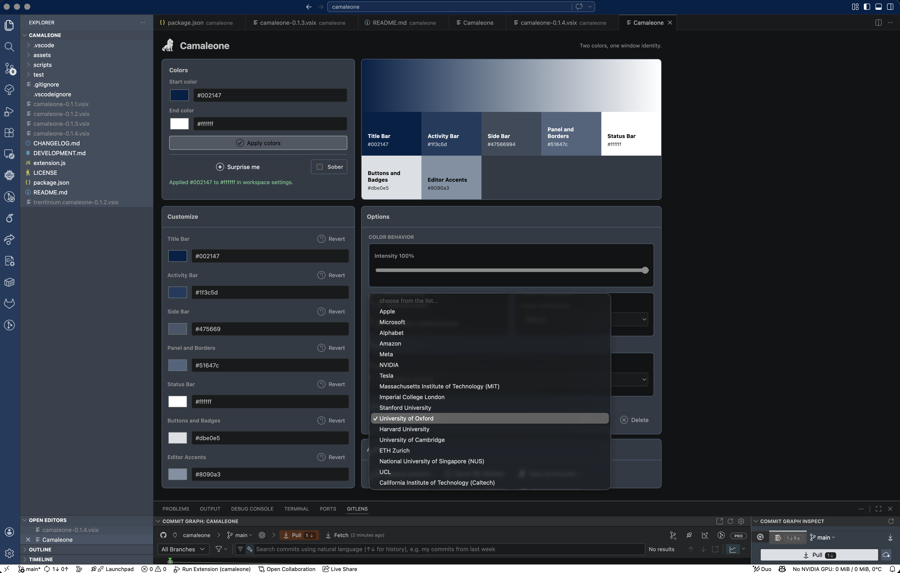
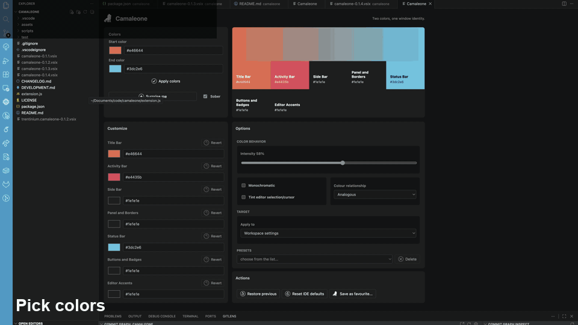
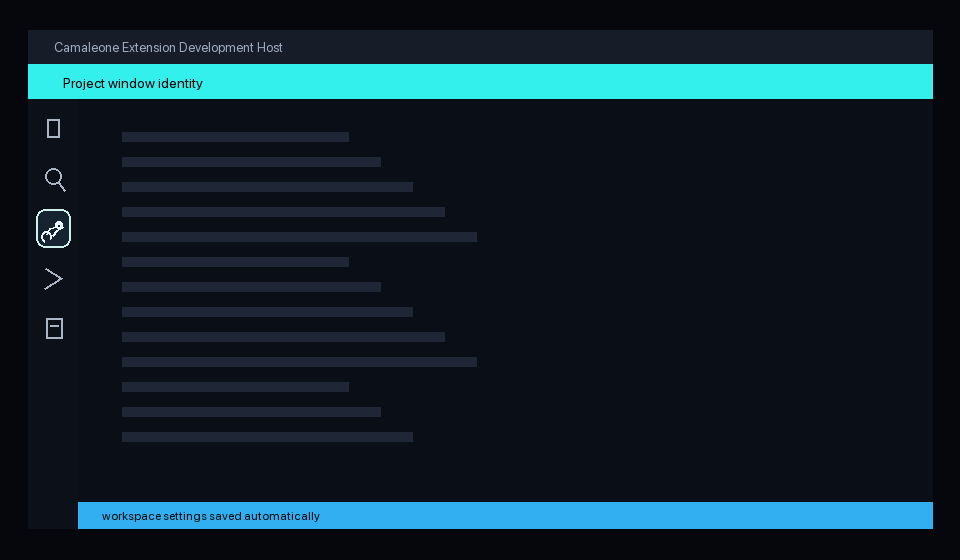

Gradient-inspired chrome
Samples a two-color pair across supported workbench color keys instead of installing a complete theme.

VS Code and Cursor extension
Color for IDE windows. Two selected colors become a workbench identity across the title bar, activity bar, side bar, panel, status bar, buttons, borders, and optional editor accents.
Total installs / downloads
Camaleone gives every editor window a recognizable visual identity without asking you to install or switch full themes.
It samples a start-to-end color pair into the workbench color API, keeps default sober output restrained, and lets you restore or reset managed colors cleanly.
Feature walkthrough
Short generated animations show both entry points: the full picker and the Activity Bar side pane for fast per-surface color changes.
Click the Camaleone icon in the left Activity Bar.
Use the full picker or compact side-pane controls.
Tune title bar, activity bar, side bar, panels, borders, and accents.
Apply colors once; Camaleone saves the workspace profile automatically.
Keep reusable window identities ready for later sessions.


Feature set
Samples a two-color pair across supported workbench color keys instead of installing a complete theme.
Keeps secondary surfaces calm while tinting the high-signal areas that identify a window quickly.
Tune title bar, activity bar, side bar, panels, status bar, buttons, borders, and editor accents.
Ships brand-inspired Magnificent 7 and QS top university presets, plus user-saved palettes.
Open Camaleone from the left side bar and pick per-surface colors without leaving the compact pane.
Restore replaced colors or remove Camaleone-managed keys to return to editor defaults.
Buy me a coffee
If this extension makes your editor easier to recognize, you can send a small thank-you through PayPal or Bitcoin.
Community note
Camaleone is an independent community project by Bruno Trentini. It is not affiliated with, endorsed by, or representative of any organization I work for, study with, or otherwise represent.
Camaleone does not capture, collect, transmit, or sell user data. It only writes the local VS Code or Cursor settings needed to apply the colors you choose.
The extension exists for developers who want recognizable editor windows without switching full themes or handing over workspace information.
If Camaleone helps your workflow, a review on the VS Code Marketplace or Open VSX would be extremely helpful for an independent developer.
Workflow
Open the compact side pane from the Activity Bar or launch the full picker from the Command Palette. Choose a start and end color, generate a palette with Surprise me, then adjust individual surfaces when the automatic result needs a more deliberate touch.
Project descriptor
Availability
{kind=link}